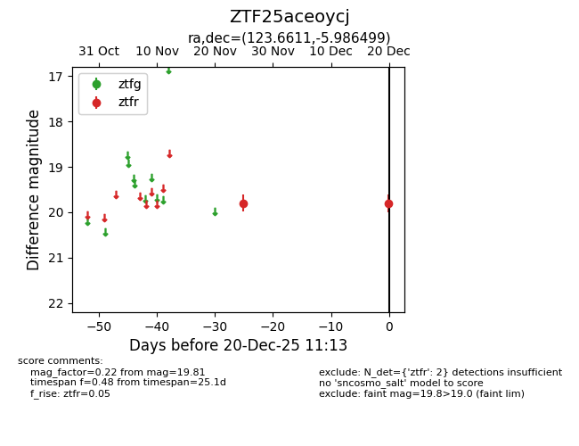
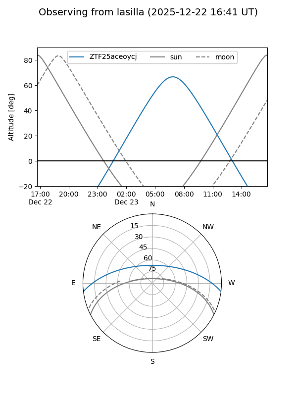
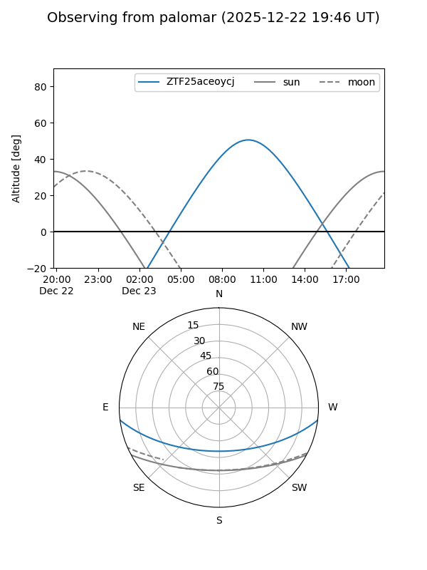

ZTF25aceoycj
Target ZTF25aceoycj at 2025-12-20 11:15
Aliases and brokers:
FINK: fink-portal.org/ZTF25aceoycj
Lasair: lasair-ztf.lsst.ac.uk/objects/ZTF25aceoycj
ALeRCE: alerce.online/object/ZTF25aceoycj
alt names
ZTF25aceoycj (ztf,fink_ztf)
Coordinates:
equatorial (ra, dec) = 123.6611,-5.98650
equatorial (HMS+DMS) = 08:14:38.67,-05:59:11.40
galactic (l, b) = (228.2050,+15.47302)
Flags:
Photometry:
last ztfr=19.81
2 ztfr detections
Lightcurve

Visibility


Additional plots